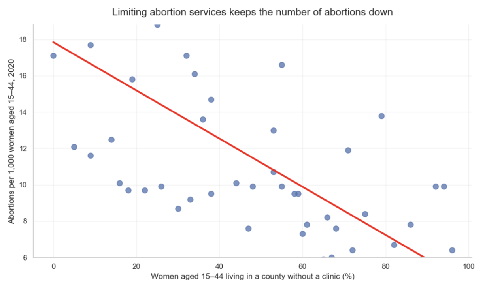
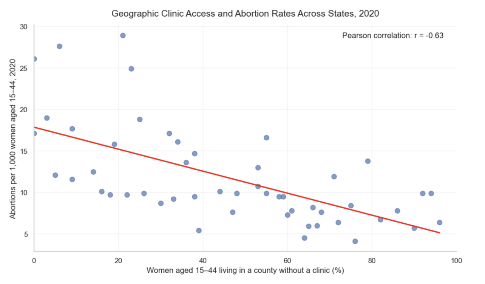

Proposition: Limiting abortion services is effective in reducing the amount of abortions
FOR the Proposition

Design Decisions and Rationale:
- Y-axis truncation creates a deceptive visual slope of the data
- Visually exaggerating difference in abortion rates to make negative correlation more pronounced
- Assertive title frames the relationship as established
AGAINST the Proposition

Design Decisions and Rationale:
- Displays moderate pearson correlation
- Begins both axes at 0
- Uses a broader y-axis range to show the true linear association visually
Final Reflection
Creating these two visualizations showed me how strongly design choices can influence the interpretatin of
data. The FOR visuaization uses a truncated y-axis and assertive framing to exaggerate the negative
relationship, while the AGAINST visualization uses a broader axis range to make the trend appear more
true to the data. Although the AGAINST visualization still shows a slight negative trend, it emphasizes
that the association is at most moderate based on the displayed Pearson's correlation.
I define ethical visualization as presenting data persuasively without distorting what it actually
demonstrates. I believe choices such as higlighting patterns are acceptable but exaggerating trends through
misleading scales or presenting corrleation as causation is wrong. Persuasion does not require complete
neutrality, it requires transparency about design decisions and honestly about the data's limitations.